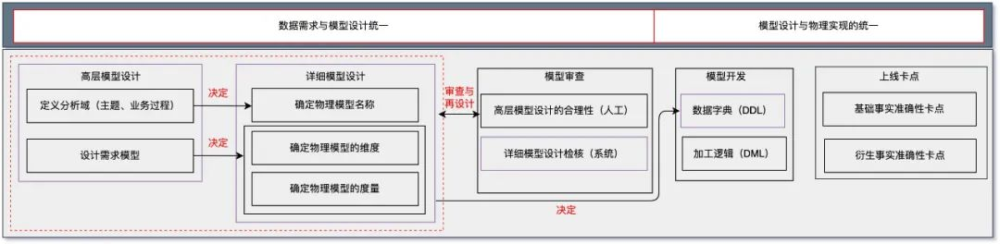
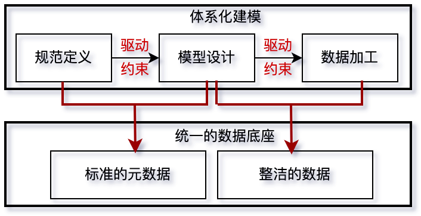
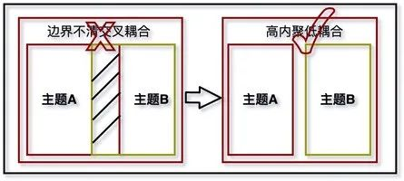
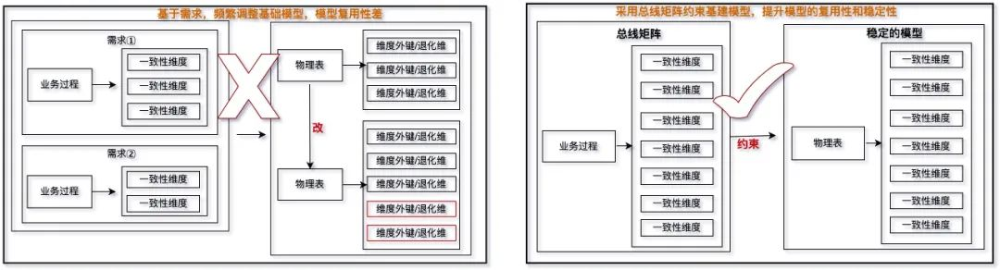
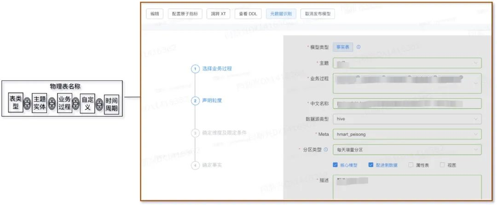
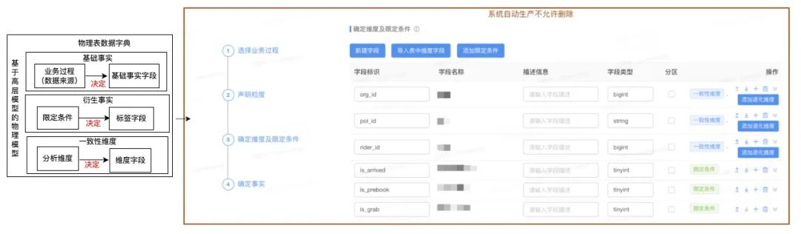

数字经济的快速发展，给企业的经营带来了新的机遇和挑战，如何有效开展数据治理，打破数据孤岛，充分发挥数据的业务价值，保护数据安全，已成为业界的热门话题。本文基于美团配送数据治理的历程，分享了数据定义、模型设计、数据生产三环节统一的配送数据“底座”的建设与实践。1 前言
2 什么是体系化建模
3 为什么要进行体系化建模
4 如何进行体系化建模
4.1 高层模型设计
4.2 详细模型设计
4.3 上线前卡点
5 总结
1 前言
本文基于美团配送数据治理的历程，重点和大家分享一下配送数据“底座”的建设与实践，如何通过体系化建模建立起数据定义到数据生产的桥梁，达成数据定义、模型设计、数据生产三个环节的统一，消除因数据标准缺失和执行不到位引发的数据信任问题，在高质量地实现数据到信息的转化的同时，为后续的数据便捷消费提供数据和元数据保障。希望能给从事数据治理方向的同学在实现数据到资产的转化过程提供一些参考和借鉴。2 什么是体系化建模
体系化建模是以维度建模为理论基础，以事前治理的理念驱动，让元数据贯穿其中的建模流程，上承指标、维度的定义，下接实际的数据生产。首先，通过高层模型设计，将业务指标结构化拆解为原子指标/计算指标+限定条件的组合方式，并将其归属到特定的业务过程和主题下，完成业务指标的计划化定义；其次，基于高层模型设计自动生产详细的物理模型设计；第三，基于产生的物理模型设计，半自动或自动地生成数据加工逻辑，以确保最终的业务定义和物理实现的统一。具体如下图1所示：图1 体系化建模概述
从对体系化建模的定义来看，它强调了两个统一，即数据需求与模型设计的统一和模型设计与物理实现的统一。数据需求与模型设计的统一，模型设计是仓库领域划分和具体需求相结合的产物。仓库领域划分是对数据进行基于业务本身但超越和脱离业务需求限制的抽象，对数据完成主题、业务过程的抽象，作为业务指标、维度需求归属和实现数据建设高内聚、低耦合的重要依据；具体的需求模型设计，是在仓库领域划分基础上的内容填充，将需求以指标、维度的形式归属到对应的主题与业务过程，以此驱动和约束具体详细模型设计，勾勒出宝贵的信息架构资产。模型设计与物理实现的统一，基于模型设计环节沉淀的信息架构元数据，以此来驱动和约束实际的物理模型，约束对应物理模型的DDL，在数据加工时，防止因缺乏有效约束带来的“烟囱式”开发，是模型上线前，自动完成业务定义与物理实现一致性验证，确保DML实现的正确性。3 为什么要进行体系化建模
此前一段时期，配送数据建设存在着需求管理（指标、维度）、模型设计、模型开发相互割裂不统一的现象，数据架构规范无法进行实质、有效的管理，元数据（指标、维度、模型设计）与实际物理模型割裂、不匹配，造成各种数据资产信息缺失。而且由于缺乏系统抓手，无法完全规范研发的模型设计质量，导致部分需求直接进行了数据开发，引起恶化模型建设质量的问题。这种缺乏规范和约束带来的“烟囱式”开发，在浪费技术资源的同时造成数据重复且不可信。配送体系化建模切入点是：以规范“基础数据建设”，消除因“烟囱式”开发给业务带来的困扰和技术上的浪费。3.1 体系化建模可以对数据架构进行实质有效的管理，从源头消除“烟囱式”开发
体系化建模不仅可以在工具上实现一体化设计和开发，而且能在机制上形成模型设计与开发实施的有效协同。以需求驱动模型设计，以模型设计驱动和约束开发实施，防止因模型设计与开发实施割裂、开发实施缺少约束带来的无序、“烟囱式”开发。3.2 体系化建模沉淀的规范元数据，可以有效消除业务在检索和理解数据时的困扰
体系化建模不但将原先割裂的数据规范定义、模型设计以及最终的物理模型实现连接在一起，而且以元数据的形式将数据资产的刻画沉淀了下来，每个指标不仅有规范的业务定义和清晰的加工口径，而且还可以映射到对应的物理表上，有效地消除了业务在检索和理解数据时的困扰。4 如何进行体系化建模
实现体系化建模要从源头开始，将数据规范定义、数据模型设计和ETL开发链接在一起，以实现“设计即开发，所建即所得”。整体策略是从源头开始，先在需求层面解决指标定义的问题，然后依次约束和驱动模型设计进而约束数据加工，将产生于线上业务流程各环节的数据进行领域化抽象，并实现业务规则的数字化，完成“物理世界”的数字孪生，形成“数字世界”。在工具层面实现基于需求的一体化设计和开发，在机制上形成模型设计与数据开发的有效协同。
图2 体系化建模思路
体系化建模不仅在工具上基于需求实现一体化设计和开发，而且在机制上形成模型设计与数据加工的有效协同。首先，基于数仓规划，将业务提的指标、维度映射到对应的主题、业务过程，然后基于数据定义标准，对业务指标进行结构化拆解，实现指标的技术定义，完成高层模型设计；其次，基于高层模型设计环节沉淀的元数据，驱动和约束最终的物理模型设计，为后续的数据加工确定最终的DDL，完成物理模型设计，以此来约束后续的数据开发。4.1 高层模型设计
一线的数据需求都是以指标和维度的形式提给数据工程师的，数据工程师首先要根据拿到的指标需求确定要分析的业务过程，完成业务过程的划分和定义，同时将指标归属到对应的业务过程下；其次，根据指标的业务口径，将业务指标拆分成原子指标+限定条件+时间周期或计算指标+限定条件+时间周期形式，完成指标的技术定义；第三，综合各方分析视角，完成该业务过程一致维度的设计，多个业务过程一致性维度的设计构成该主题下的总线矩阵。上述高层模型设计，涉及两个环节。第一，通过业务抽象完成领域模型划分，我们基于业务的实际流程来划分业务过程，并按照分析领域完成业务过程的归属。在特定的业务下，分析领域和对应的业务流程不会随着分析需求的变化而变化，领域划分也不会随着分析需求的变化而变化，可以基于此划分，构建稳定的资产目录。第二，通过完成业务指标的技术定义并将其归属到特定的业务过程下，以及确定特定业务过程的分析维度完成逻辑建模。逻辑建模进一步勾勒出了在特定的分析领域和业务过程下，具体的分析度量和分析维度，完成最终的高层模型设计，高层模型的设计决定了在特定的分析域和分析业务过程下的具体物理产出。更具体的讲，确定业务过程下的分析度量需要完成业务指标的技术定义，并将其归属到特定的业务过程下。在这一步中，我们从技术角度对业务指标产出了结构化的技术定义，形成了一套结构化指标体系。一方面结构化定义容易统一并形成标准，避免全文字描述带来理解上的歧义，另一方面结构化的定义有助于系统来保障其一致性，解决靠人工来保障一致性难以实施的难题。我们的结构化指标方案将指标分为：原子指标、计算指标和衍生指标，并针对这三类指标做了如下明确的定义：- 原子指标：指在某一业务过程下不可再拆分的指标，具有明确业务含义的名词。在物理实现上，它是特定业务过程下业务实体字段加特定聚合算子的组合。
- 计算指标：由原子指标与限定条件组合并经过加减乘除四则运算得到的指标。计算指标有明确的计算公式作为计算指标的定义，可以与多个限定条件进行组合。对于计算指标的归属，我们遵循2个原则①由于原子指标都能归属到相应的业务过程，业务过程一般来说都有时间前后顺序，将计算指标归属到顺序靠后的业务过程中；②如果涉及到多个业务过程，同时这些业务过程没有时间的先后顺序，这种情况下需要判断指标描述内容与主题业务过程的相关性，然后再归属到对应的业务过程。在物理实现上，计算指标可以由其定义的计算公式直接自动的生成其实现逻辑。
- 衍生指标：由 “时间周期+多个限定条件+原子指标/计算指标” 组成的指标。由于衍生指标是由原子指标/计算指标衍生出来的，所以衍生指标需要归属到原子指标/计算指标所属的业务过程。
- 限定条件：限定条件是指标业务口径的一个逻辑封装，时间周期也可以算作一类特殊的限定条件，是衍生指标必须包含的。在物理实现上我们将其加工成衍生事实的一个逻辑标签。
在这样的定义后，衍生指标便清晰地分为原子衍生指标和计算衍生指标两类，都可以比较容易地通过结构化的方式半自动生成定义和实现。衍生指标覆盖了用户生成报表等数据产品的所有指标，而原子指标和计算指标作为指标体系的核心内容不直接提供给用户使用。在指标的实现方式上也容易明确，原子指标和计算指标的逻辑尽量下沉在基础事实层中，而衍生指标在中间层和应用层根据需求实现。4.2 详细模型设计
详细模型设计是将高层模型设计转化为实际物理生产的桥梁，详细模型设计必须结合数据的生产流程，给出与其分层模型相匹配的实际物理模型。根据数仓不同分层间的职责边界，详细模型设计又呈现出不同特点。具体说来，需要数据工程师结合业务需求，对应的逻辑建模产出的DDL完成最终物理模型的加工生产，这是我们详细模型设计的核心。对于中间层汇总模型，是为提高查询性能，基于明细模型进行预计算的过程，不涉及任务业务口径的加工，只要元数据定义清晰，完全可以通过工具实现“TEXT2SQL”进而实现配置化生产。我们的工程师只需要关注基建层的开发，中间和应用层建设交给工具完成，节省了大量的时间和精力。在展开详细模型设计之前，我们先介绍一下数仓分层，然后通过数据分层来介绍与之匹配的详细模型设计。4.2.1 数仓分层简介
按照整个数据生产的流转链路看，数据会经历产生、接入、加工到最后的消费，数仓的建设主要集中在数据的接入和加工环节。数据的接入包含数据的获取和清洗两个过程，通过该过程完成了数据从业务系统到仓库的流转，为后续基于分析场景的数据建模提供了原始数据，我们将该过程产生的数据定义为准备区数据，该过程基本通过工具实现了自动化，不需要太多的人为参与和设计。另一过程，为了支持用户、报表制作者以及其他BI应用的查询，我们需要为用户提供开放区数据，目前采取维度建模和仓库分层理论，通过星型明细模型+多维汇总模型的方式分别满足用户固定的在线分析，以及无法预期的、随意查询的即席分析诉求。该区域是数据工程师整体工作的核心，可以利用在线建模沉淀的元数据，辅助我们完成数据生产的提效和提质。在数据准备区，我们将数据模型分为基础明细层（B3）、中间汇总层（B2、B1）来支撑不同场景的数据需求。4.2.2 元数据驱动的详细模型设计
元数据驱动的详细模型设计，是基于高层模型设计产出的逻辑模型，进而来驱动和约束后续要加工的物理模型DDL，大致分成三步：第一，确定物理模型名称；第二，基于模型归属自动生成基础事实，基于需求确定衍生事实，完成事实确定；第三，基于总线矩阵，确定模型一致性维度。每一步具体操作的内容因模型所属的仓库分层不同而有所区别。对于中间汇总层而言，只是在基础模型基础上的多维上卷，基础模型确定以后，人工通过简单的指标拖拽，就可以自动生产DDL而且可以自动生产DML，相对较简单，在此不做详述。接下来，我们重点描述一下基础事实层的详细模型设计，具体如下图所示：第一步，根据模型的出处确定模型名称，经过此处，不仅规范了模型命名，而且在数据生产前自动实现了资产挂载，方便了后续数据的管理和运营；第二步，根据第一步的模型挂载，约束并确定该模型要生产的事实，即该模型所包含的基础事实字段由对应业务过程下的快照表决定，自动生产基础事实字段，该模型所包含的衍生事实由由对应业务过程下的衍生指标所需的限定条件决定，确保了需求、模型设计、物理实现三者的统一。通过该过程，我们约束了实际生产环节物理模型的随意加工，从源头消除了“烟囱式”开发带来的冗余。通过元数据约束了对应主题应该生产哪些事实，从源头防止了边界不清带来的交叉耦合问题，保障了最终物理模型的高内聚、低耦合。
图7 元数据驱动的模型设计从源头消除烟囱式开发
第三步，基于总线矩阵确定物理模型的一致性维度，不是基于需求来添加维度，后期如果因需求变动而频繁调整基础模型，这样会导致基础模型复用性差，而是在模型生产之初，一次性完成维度的设计和生产，以提升模型的稳定性和复用性。
图8 采用总线矩阵约束模型保障模型复用性和稳定性
在阐述了详细模型设计的理念和约束后，我们再详细看一下在具体产品层面是如何实现的。详细模型设计就是基于上一阶段的高层模型设计和物理建模的基本原则，采用系统化的方式引导数据工程师按照标准的流程完成对应的物理模型设计，以最终产出的DDL作为该环节的交付物，指导数据工程师在生产环节，完成最终的DML编写。这个环节除了辅助数据工程师完成规范化的模型设计外，还通过物理模型完备了上下文描述，包括完成了物理表与资产目录的映射关系、物理字段与指标维度的映射关系，为后续资产消费环节提供了完备的基础元数据。按照物理模型设计最终的交付物来看，它的设计流程主要包括两部分：第一，按照规范和标准，确定物理模型的名称；第二，按照规范和标准，确定物理模型的数据字典。- 通过确定所建物理模型对应的数仓层级、主题域和业务过程，自动生成该物理表的名称。

图9 详细模型设计之确定物理表的名称和资产归属
- 基于高层模型设计环节确定的分析度量和维度，自动生成物理表对应的数据字典，确保模型设计与最终物理落地的一致性，从源头杜绝不规范的开发。

图10 详细模型设计之确定物理表的字段信息并完成指标、维度与字段的映射
4.3 上线前卡点
高层模型设计和详细模型设计约束和规范了数据工程师如何确定一个模型的DDL，对于如何约束和保证实际的加工逻辑（模型的DML）和业务定义保持一致，并没有与之匹配的约束卡点。上线前卡点就是利用高层模型和详细模型设计这两个环节产生的元数据，通过自动化的方式来完成DML与业务定义的一致性验证，消除人工验证带来的成本问题。具体卡点验证包括四类：- 相同指标不同出处的数据一致性验证，将来自不同出处的相同指标上卷到相同维度，它们具有相同的数值；
- 业务定义与具体实现的一致性验证，此类验证主要针对码值类字段，具体数值必须与其对应的业务定义一致；
- 研发合规的约束类验证，例如，主键必须唯一、全表扫描、代码流程分支覆盖（T+1重导、批量重导、全量重导）；
- 变更时的级联影响，包括下游的生产任务影响和消费任务影响。
5 总结
体系化建模是配送数据团队围绕着数据资产化建设“提质降本和数据应用提效”这一目标孵化的产物，本着将标准流程工具化的思路，我们通过工具来约束和规范数据工程师的生产，力图将模型的规范化治理做到事前，避免重蹈业务快速发展阶段“先建设后治理”的覆辙。在模型提质方面，我们实现了高层模型设计、物理模型设计的统一以及业务定义与物理实现的统一，而且在提效方面，在线建模通过系统的方式为我们沉淀了宝贵的元数据，是我们后续基于元数据进行应用提效的关键。① 体系化建模，搭建起了数据定义到生产的桥梁，实现数据到信息的转化，提供了完备的流程保障，并在配送内部实现了涉及10多个主题、180多个原子指标、300多个计算指标和90多个衍生指标的统一。在美团内部，涉及配送交易、履约等核心主题的规范性建设方面治理评分均取得了优秀的成绩，特别是在指标完整性建设得分和物理模型维度完整性得分方面，均取得90分以上优秀成绩。② 得益于体系化建模实现的元数据和数据的统一，我们实现了数据建设从“保姆”模式到“服务+自助”模式的转变。在数据检索方面，得益于体系化建模沉淀的高质量元数据，我们构建了数据地图，解决了数据“可搜索/可获取”问题，并在检索内容方面实现了所建即所得。在数据消费方面，得益于体系化建模沉淀的高质量元数据，我们实现了“服务+自助”的数据服务模式，不仅消除了传统报表开发完全依赖产研带来的开发流程长、需求响应慢、覆盖用户少等问题，而且解决了无法“零SQL”即席分析的难题，满足了业务人员通过“拖、拉、拽”即可快速产生分析报告的诉求。目前，该模式广泛应用于所有业务大区”零SQL“数据运营人员早报、周报、季度述职等业务场景，得益于上述模式，不仅得到了一线人员广泛好评，而且也将我们的数据RD从“取数”、“跑数”的繁重工作中解脱出来。作者简介